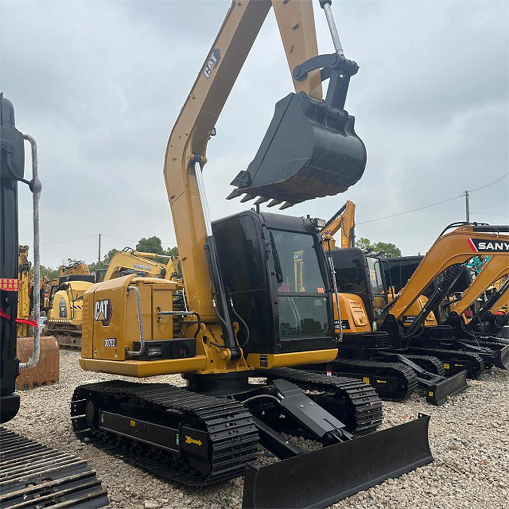

Refurbished Caterpillar Cat 307 Excavator
The Caterpillar Cat 307 Excavator is a compact, high-performance machine designed to tackle a variety of tasks in construction, landscaping, and light demolition projects. Known for its impressive versatility, fuel-efficient engine, and exceptional hydraulic system, the Cat 307 is a popular choice for contractors looking for reliable performance in tight spaces. A refurbished Cat 307 offers the same outstanding performance and longevity as a new machine but at a more affordable price, making it an ideal solution for businesses seeking a cost-effective yet high-quality excavator.
Honestly, it's almost impossible to buy a brand new excavator from China. They either don't exist or are made in China. If a Chinese seller tells you their Caterpillar/Komatsu/Volvo/Kobelco/Hitachi is brand new, they're lying. Therefore, a refurbished excavator is your best bet.

Here are the detailed specifications for a refurbished Caterpillar Cat 307 excavator:
Operating Weight and Dimensions
- Operating Weight: ~7,000–7,500 kg
- Transport Length: ~6.1–6.3 meters
- Transport Width: ~2.3 meters
- Transport Height: ~2.5–2.6 meters
- Tail Swing Radius: ~1.6–1.8 meters (compact radius design)
- Track Width: 450 mm standard
- Undercarriage: Fixed gauge or variable gauge depending on variant
Engine and Powertrain
- Engine Model: Cat 3046 or Cat C2.4 (depending on build year; Tier 2 or Tier 3 compliant)
- Rated Power Output: ~45–49 kW (60–66 hp) @ 2,200 rpm
- Fuel Tank Capacity: ~120–135 liters
- Travel Speed: 2.8–5.0 km/h
- Swing Speed: ~10–11 rpm
- Drive Type: Hydrostatic with planetary final drives
Hydraulic System
- Main Pump Type: Load-sensing, variable displacement piston pumps
- Flow Rate: ~2 × 100–110 L/min
- System Pressure: Up to 28 MPa
- Hydraulic Oil Capacity: ~90–100 liters
- Efficiency Features:
- Boom/swing priority
- Regeneration circuits
- Auto hydraulic warm-up
Performance Metrics
- Bucket Capacity: 0.25–0.35 m³ (SAE heaped)
- Max Digging Depth: ~4.0–4.2 meters
- Max Reach (Horizontal): ~6.2–6.5 meters
- Max Dump Height: ~4.3–4.5 meters
- Bucket Digging Force: ~50–55 kN
- Arm Digging Force: ~35–40 kN
Cab and Operator Features
- Cab Type: ROPS/FOPS certified
- Display: Analog gauges or basic LCD monitor
- Controls: Pilot-operated joysticks with auxiliary hydraulic circuit
- Comfort: Adjustable seat, optional HVAC
- Visibility: Wide glass area, LED work lights
Smart Features and Efficiency
- Fuel Efficiency:
- Mechanical fuel injection
- Auto idle and engine shutdown
- Emissions Control: Tier 2 or Tier 3 compliant (no DPF/SCR)
- Transportability: Easily trailerable under 8-ton class
Attachments Compatibility
- Standard Bucket: 0.25–0.35 m³
- Optional Tools: Hydraulic breaker, auger, compactor, ripper
- Quick Coupler: Manual or hydraulic options available
Refurbishment Scope
Refurbished Cat 307 units typically include:
- Engine Overhaul: Turbocharger, injectors, cooling system
- Hydraulic Restoration: Pump recalibration, valve block testing, hose replacement
- Electrical Diagnostics: Monitor, sensors, wiring harness
- Cab Reconditioning: Seat, joysticks, HVAC, repainting
- Structural Repairs: Boom/bucket welding, bushing replacement, undercarriage rebuild
Overview of the Caterpillar Cat 307 Excavator
The Caterpillar Cat 307 is a mid-sized, tracked hydraulic excavator designed to handle a wide range of applications, including digging, grading, lifting, and light demolition. Its compact design allows it to perform efficiently in confined spaces, while its powerful hydraulics and engine ensure that it can take on demanding tasks without sacrificing performance. The Cat 307 is built to work in small to medium-sized projects, making it an excellent choice for urban construction, landscaping, and infrastructure development.
Refurbished Cat 307 excavators undergo a rigorous inspection and reconditioning process, where worn components are replaced, and the machine is restored to factory specifications. This ensures that the equipment is reliable, efficient, and ready to perform at the highest level.
Key Specifications of the Caterpillar Cat 307 Excavator
The Cat 307 comes with a range of specifications that make it versatile and suitable for a variety of tasks:
-
Operating Weight: 7,000 - 8,000 kg (15,400 - 17,600 lbs)
-
Engine Power: 55 - 75 hp (41 - 56 kW)
-
Max Digging Depth: Up to 5.4 meters (17.7 feet)
-
Maximum Reach: 7.2 meters (23.6 feet)
-
Bucket Capacity: 0.3 - 0.5 cubic meters (10 - 17 cubic feet)
-
Fuel Tank Capacity: Around 120 - 140 liters (31 - 37 gallons)
-
Travel Speed: 5.5 km/h (3.4 mph)
These specifications enable the Cat 307 to perform a variety of tasks efficiently, from excavation and trenching to grading and material handling.
Performance and Efficiency of the Cat 307
The Caterpillar Cat 307 Excavator is engineered for efficiency, offering powerful hydraulics and excellent fuel economy. Its robust engine and hydraulic system make it an ideal choice for contractors who need a reliable machine that can handle tough tasks without compromising on performance or fuel consumption.
Performance Highlights:
-
Efficient Hydraulics: The Cat 307 is equipped with a high-performance hydraulic system that provides smooth, precise control over the boom, arm, and bucket. This allows operators to complete tasks more quickly and efficiently, particularly in applications such as digging, trenching, and material handling.
-
Fuel Efficiency: The engine in the Cat 307 is designed to offer maximum fuel efficiency, helping businesses reduce operational costs. Its fuel-saving technology allows it to operate longer hours on a single tank of fuel, making it ideal for projects that require extended hours of work.
-
Digging and Lifting Power: With its powerful hydraulics and reliable engine, the Cat 307 can handle challenging digging and lifting tasks. Its impressive digging depth and reach make it suitable for applications such as foundation digging, trenching, and even material lifting.
-
Precision Control: The responsive controls of the Cat 307 provide operators with precise control, even in tight or restricted spaces. This allows for more accurate digging and lifting, which is crucial when working in urban environments or performing delicate tasks.
Durability and Longevity of the Cat 307
Caterpillar is known for producing durable and long-lasting equipment, and the Cat 307 is no exception. Built with high-quality materials and engineered for long-term performance, this excavator can withstand tough conditions and deliver consistent results for years.
Durability Features:
-
Reinforced Undercarriage: The undercarriage of the Cat 307 is built to endure tough conditions, including rough terrain and uneven surfaces. Its tracks, sprockets, and rollers are designed for durability, ensuring that the machine remains operational even in challenging environments.
-
Long-Lasting Engine: The engine in the Cat 307 is designed to offer many years of reliable service. With regular maintenance, the engine can provide thousands of hours of dependable performance, making the Cat 307 a long-term investment for businesses.
-
Hydraulic System Durability: The hydraulic system of the Cat 307 is engineered for longevity, with components that can withstand high pressure and heavy usage. This ensures that the excavator will continue to operate smoothly and efficiently over time.
Comfort and Safety of the Cat 307
Operator comfort and safety are top priorities for Caterpillar, and the Cat 307 is designed with these factors in mind. The cabin is spacious and ergonomically designed, offering excellent visibility and reducing operator fatigue during long shifts.
Comfort and Safety Features:
-
Spacious and Ergonomic Cabin: The Cat 307 features a roomy cabin with adjustable seating and easy-to-use controls. The ergonomic design helps reduce operator fatigue, improving productivity and comfort during extended working hours.
-
Noise and Vibration Reduction: The Cat 307 is equipped with noise and vibration reduction features in the cabin, ensuring a quieter, more comfortable working environment for the operator. This is especially beneficial for projects that require long hours of operation.
-
Safety Features: The Cat 307 includes Roll Over Protection (ROPS) and Falling Object Protection (FOPS) to safeguard the operator in hazardous work environments. Additionally, the machine’s stable base and low center of gravity enhance safety when working on uneven surfaces.
Versatility and Attachments for the Cat 307
The Cat 307 is a highly versatile excavator that can be equipped with a variety of attachments, making it suitable for a range of tasks. Whether you're digging, lifting, grading, or performing demolition, the Cat 307 can be fitted with the right tools for the job.
Common Attachments for the Cat 307:
-
Buckets: The Cat 307 can be fitted with different bucket types, such as general-purpose, heavy-duty, or grading buckets. These buckets typically range from 0.3 - 0.5 cubic meters (10 - 17 cubic feet) in capacity, enabling efficient material handling.
-
Hydraulic Breakers: For demolition and material breaking, the Cat 307 can be equipped with hydraulic breakers. These attachments allow the machine to break through concrete, rock, and other tough materials with ease.
-
Augers: The Cat 307 can be equipped with auger attachments, which are perfect for digging precise holes for foundations, posts, or other applications that require deep, narrow holes.
-
Grapples: For material handling, the Cat 307 can be fitted with grapple attachments to efficiently lift and move logs, scrap metal, or debris.
-
Quick Couplers: Quick couplers allow for rapid attachment changes, reducing downtime and increasing productivity on the job site.
Benefits of Purchasing a Refurbished Caterpillar Cat 307 Excavator
Buying a refurbished Cat 307 offers several advantages, particularly for businesses that need to manage their budgets while maintaining high productivity.
Key Benefits:
-
Cost Savings: Refurbished Cat 307 excavators are considerably more affordable than new models, offering high-quality performance at a lower price. This allows businesses to stretch their budgets without compromising on equipment quality.
-
Thorough Reconditioning: Each refurbished Cat 307 undergoes a comprehensive inspection and reconditioning process, with all worn components replaced by genuine Caterpillar parts. This ensures that the machine operates like new.
-
Warranty: Many refurbished units come with a warranty, giving buyers peace of mind that their investment is protected against unexpected issues.
-
Environmental Benefits: Purchasing refurbished equipment is an eco-friendly choice. It reduces waste and contributes to sustainability by extending the lifespan of existing machines.
Maintenance Tips for the Caterpillar Cat 307 Excavator
To ensure optimal performance and longevity, regular maintenance is essential for the Cat 307. Following a proactive maintenance schedule can prevent downtime and costly repairs.
Maintenance Recommendations:
-
Engine Maintenance: Regularly inspect the engine oil, air filters, and coolant levels. Changing the engine oil and replacing air filters at scheduled intervals will help maintain smooth engine operation.
-
Hydraulic System: Check hydraulic hoses for leaks and replace hydraulic filters as needed. Maintaining a clean and well-functioning hydraulic system is crucial for consistent machine performance.
-
Undercarriage: Inspect the undercarriage for wear, especially the tracks, sprockets, and rollers. Timely replacement of damaged components will prevent further damage and ensure smooth operation.
-
Attachments: Inspect buckets, grapples, and other attachments for wear and tear. Replace or repair any damaged parts to maintain optimal functionality.
Conclusion
The Caterpillar Cat 307 Excavator is a reliable, versatile machine that delivers exceptional performance and fuel efficiency. Purchasing a refurbished Cat 307 provides a cost-effective alternative to buying new equipment, while still offering top-tier performance, durability, and reliability. With proper maintenance, the Cat 307 can continue to deliver high performance for many years, making it a smart investment for contractors and businesses across various industries. Whether you're digging, grading, or performing demolition, the Cat 307 is the ideal machine for your needs.
Our Commitment
- 2 years / 4000 hours warranty.
- EPA certified.
- No sweatshop labor.
Contacts

- [email protected]
- Youtube Instagram Facebook
- Navigation: G206 (Sishu Bridge) in Changfeng County, Hefei City, Anhui Province, 200 meters north to the east